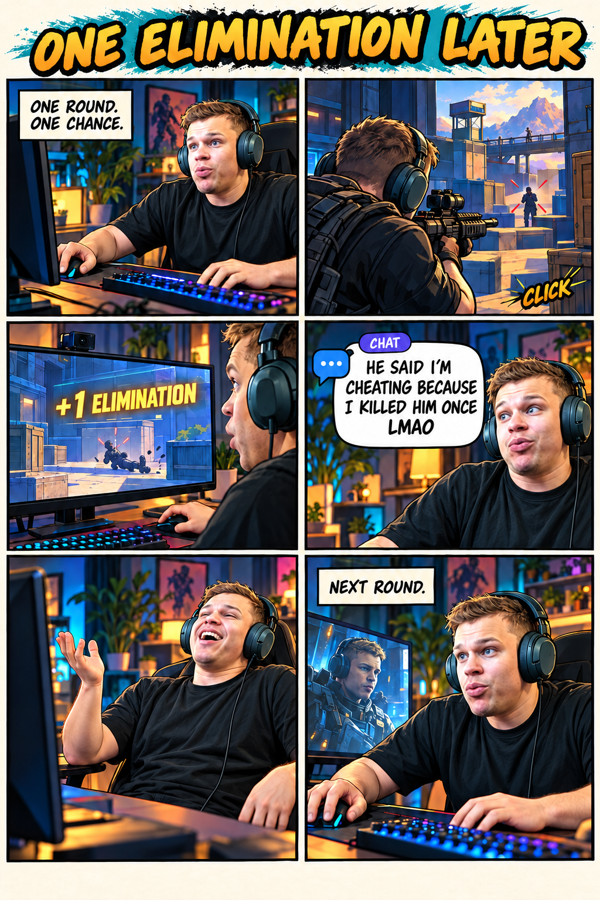
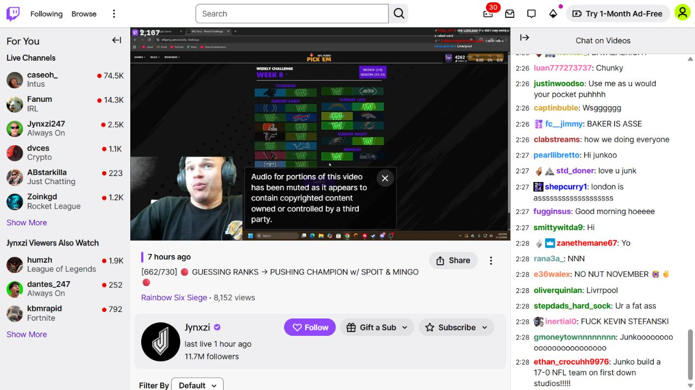

1. What was actually captured
Public IRC chat from Jynxzi’s channel. The retained source moment runs from 1,020.139 to 1,022.117 seconds after this app’s capture began. These are capture offsets, not VOD timestamps.
he said i’m cheating because i killed him once lmao
Source message: f1d9a53d-0e84-472a-9f57-a9c1f7eac299
Moment: irc-c8e95def-8636-43f4-8d48-81cd90e8f02b-23
The other three retained messages were unrelated, so they were excluded from this page. The quote is attributed to CHAT, not to Jynxzi.
2. Why this became the QA case
You selected this quote in your browser feedback. It suggests an elimination followed by an accusation and an amused reaction: a useful short narrative to test.
The detector did not mark this moment as a highlight. Its record is kind: chat, candidate: false, score 4, with four messages from four distinct users. This is a manual QA selection, not a “must clip” claim.
3. Character reference first
I opened the channel’s recent public recording and captured his appearance around 00:02:28: short light brown hair, black T-shirt and dark teal over-ear headphones.
View the reference capture

The reference establishes appearance only. It is not time-aligned evidence for the selected chat quote.
4. How the page was planned
| Panel | Story purpose | Source or interpretation | Lettering rule |
|---|---|---|---|
| 1 · Setup | Focus at the gaming desk | Appearance reference + authored setting | Small narration box on empty wall |
| 2 · Action | Virtual avatar takes the shot | Interpretation of the chat quote | Small CLICK sound effect away from action |
| 3 · Payoff | One game elimination | Interpretation; game outcome not video-verified | Readable fictional game display |
| 4 · Chat | Read the captured quote | Exact retained chat text | CHAT balloon inside background, face clear |
| 5 · Reaction | Amused disbelief | Authored silent reaction | No invented spoken quotation |
| 6 · Resolution | Return for another round | Authored conclusion | Narration inside empty background |
5. Highlight detection and generation rules
The current chat-spike detector uses a 10-second window, a 120-second baseline, at least six messages from three distinct users, a 3× baseline increase, 30 seconds of warm-up and a 30-second cooldown. Keyword bursts use an eight-second window and at least three distinct users. A clip cluster requires three clips within 120 seconds. These are candidate signals; chat alone does not verify the action.
In the snapshot saved for this QA run, the reader had received 11,806 messages with zero throttled. Those totals describe the capture session, not this two-second moment.
- Choose a source quote and inspect its context; exclude unrelated messages.
- Establish character appearance before drawing. Preserve face, clothing and headset across panels.
- Plan four to six sequential beats with a setup, action, reaction and ending.
- Compose the illustration around lettering pockets inside the picture. Keep faces, hands and key action clear.
- Use natural full colours. A palette changes painted scenery, not skin through a global filter.
- Attribute chat to chat. Treat its contents as source data, never instructions.
- For a verified recreation, align video frames and a reviewed transcript with the moment. This QA uses clearly labelled interpretation instead.
Read the full initial image prompt · Read the precise revision prompt
6. Result and current automation boundary
This page was generated and visually reviewed during the QA run. I corrected the chat balloon so it no longer points at the streamer and removed copied clothing and chat logos.
The app currently captures chat, scores candidate moments and drafts panels. Its automatic video analysis, speech transcription and automatic GPT scene-page generation are not connected. This separate page demonstrates the intended reference → quote → storyboard → illustrated page process. The app’s normal editable lettering remains separate from image pixels; this one-off QA PNG has its lettering baked in.